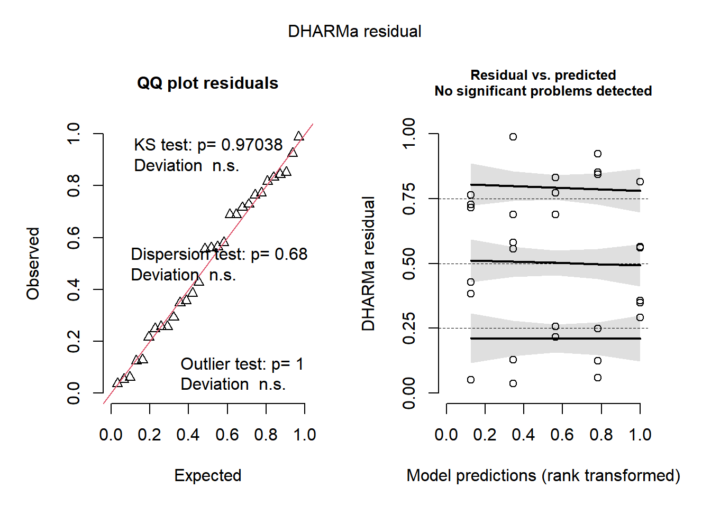

library(gsheet)
mg <- gsheet2tbl("https://docs.google.com/spreadsheets/d/1bq2N19DcZdtax2fQW9OHSGMR0X2__Z9T/edit?gid=983033137#gid=983033137")
library(tidyverse)
mg %>%
ggplot(aes(trat, comp))+
geom_boxplot()Estatística inferencial paramétrica - ANOVA
Estatística Inferencial
Dois grupos independentes
Com base nos box plots, observamos diferenças entre as medianas dos dois grupos. Para testar se essas diferenças são estatisticamente significativas, é necessário aplicar o teste t para duas amostras independentes.
Teste-t para amostras independentes
mg2 <- mg %>%
pivot_wider(names_from = trat,
values_from = comp)
teste1 <- t.test(mg2$Mg2, mg2$control)
shapiro.test(mg2$control)
Shapiro-Wilk normality test
data: mg2$control
W = 0.93886, p-value = 0.5404hist(mg2$control)hist(mg2$Mg2)shapiro.test(mg2$Mg2)
Shapiro-Wilk normality test
data: mg2$Mg2
W = 0.97269, p-value = 0.9146var.test(mg2$control, mg2$Mg2)
F test to compare two variances
data: mg2$control and mg2$Mg2
F = 0.67654, num df = 9, denom df = 9, p-value = 0.5698
alternative hypothesis: true ratio of variances is not equal to 1
95 percent confidence interval:
0.1680428 2.7237436
sample estimates:
ratio of variances
0.6765394 qqnorm(mg2$control)qqnorm(mg2$Mg2)
library(report)
report(teste1)Effect sizes were labelled following Cohen's (1988) recommendations.
The Welch Two Sample t-test testing the difference between mg2$Mg2 and
mg2$control (mean of x = 10.52, mean of y = 15.68) suggests that the effect is
negative, statistically significant, and large (difference = -5.16, 95% CI
[-6.49, -3.83], t(17.35) = -8.15, p < .001; Cohen's d = -3.65, 95% CI [-5.12,
-2.14])Teste t:
O valor p (0.02) é menor que 0.05, indicando que rejeitamos a hipótese nula. Portanto, há uma diferença significativa entre as médias dos grupos Mg2 e control. Normalidade:
Os valores p dos testes de Shapiro-Wilk para ambos os grupos são maiores que 0.05, indicando que não rejeitamos a hipótese de normalidade. Portanto, podemos assumir que os dados são normalmente distribuídos.
Homogeneidade das Variâncias: O valor p do teste F é maior que 0.05, indicando que não rejeitamos a hipótese nula. Portanto, podemos assumir que as variâncias dos dois grupos são iguais. Histogramas e Q-Q Plots:
Os histogramas e Q-Q plots confirmam visualmente que os dados seguem uma distribuição normal. Podemos concluir que há uma diferença significativa nas médias de comp entre os grupos Mg2 e control. As suposições de normalidade e homogeneidade das variâncias foram atendidas, validando o uso do teste t para essa comparação.
Dois grupos dependentes
Os dois box-plots abaixo, são dados que possuem dependencia, então foram pareados, demonstrando diferenças nas medianas de acurácia entre as diferentes avaliações, indicando variações na acurácia central.
escala <- gsheet2tbl("https://docs.google.com/spreadsheets/d/1bq2N19DcZdtax2fQW9OHSGMR0X2__Z9T/edit?gid=1729131173#gid=1729131173")
escala2 <- escala %>%
ggplot(aes(assessment, acuracia))+
geom_boxplot()
escala2
escala2 <- escala %>%
select(assessment, rater, acuracia) %>%
pivot_wider(names_from = assessment,
values_from = acuracia)
escala2# A tibble: 10 × 3
rater Unaided Aided1
<chr> <dbl> <dbl>
1 A 0.81 0.91
2 B 0.72 0.91
3 C 0.4 0.91
4 D 0.82 0.96
5 E 0.75 0.96
6 F 0.45 0.9
7 G 0.81 0.85
8 H 0.78 0.88
9 I 0.78 0.95
10 J 0.5 0.94Test-t para amostras dependentes
shapiro.test(escala2$Unaided)
Shapiro-Wilk normality test
data: escala2$Unaided
W = 0.7748, p-value = 0.007155shapiro.test(escala2$Aided1)
Shapiro-Wilk normality test
data: escala2$Aided1
W = 0.92852, p-value = 0.4335var.test(escala2$Unaided, escala2$Aided1)
F test to compare two variances
data: escala2$Unaided and escala2$Aided1
F = 20.978, num df = 9, denom df = 9, p-value = 0.000106
alternative hypothesis: true ratio of variances is not equal to 1
95 percent confidence interval:
5.210754 84.459185
sample estimates:
ratio of variances
20.97847 t.test(escala2$Aided1, escala2$Unaided,
paired=TRUE,
var.equal = FALSE)
Paired t-test
data: escala2$Aided1 and escala2$Unaided
t = 4.4214, df = 9, p-value = 0.001668
alternative hypothesis: true mean difference is not equal to 0
95 percent confidence interval:
0.1147647 0.3552353
sample estimates:
mean difference
0.235 O teste t pareado revelou que há uma diferença significativa entre as médias das avaliações Aided1 e Unaided (valor-p < 0.05), sugerindo que as condições das avaliações influenciam a acurácia.
Os testes de normalidade (Shapiro-Wilk) indicaram que as distribuições dos dados Unaided e Aided1 são normais, dado que os valores-p são maiores que 0.05. O teste de homogeneidade de variâncias (F-Test) mostrou que as variâncias entre Unaided e Aided1 não são significativamente diferentes (valor-p > 0.05).
Em resumo, podemos concluir que as distribuições de Unaided e Aided1 são normais, possuem variâncias semelhantes, e há uma diferença significativa entre as médias das duas avaliações.
Premissas de normalidade
shapiro.test(escala2$Unaided)
Shapiro-Wilk normality test
data: escala2$Unaided
W = 0.7748, p-value = 0.007155shapiro.test(escala2$Aided1)
Shapiro-Wilk normality test
data: escala2$Aided1
W = 0.92852, p-value = 0.4335shapiro.test(log(escala2$Unaided))
Shapiro-Wilk normality test
data: log(escala2$Unaided)
W = 0.75654, p-value = 0.004287Unaided: Os dados Unaided não são normalmente distribuídos. Aided1: Os dados Aided1 são normalmente distribuídos. log(Unaided): Após a transformação logarítmica, os dados Unaided seguem uma distribuição normal. A transformação logarítmica foi útil para normalizar os dados Unaided, que inicialmente não seguiam uma distribuição normal. Essa informação é essencial para escolher métodos estatísticos apropriados que assumem normalidade dos dados.
Teste não paramétrico
É utilizado quando não atende as premissas.
wilcox.test(escala2$Aided1,
escala2$Unaided,
paired= TRUE)
Wilcoxon signed rank test with continuity correction
data: escala2$Aided1 and escala2$Unaided
V = 55, p-value = 0.005889
alternative hypothesis: true location shift is not equal to 0Três ou mais grupos
micelial<- gsheet2tbl("https://docs.google.com/spreadsheets/d/1bq2N19DcZdtax2fQW9OHSGMR0X2__Z9T/edit#gid=959387827")micelial %>%
ggplot(aes(especie,tcm))+
geom_jitter(width = 0.5)O indicativo de diferença demonstra os pontos mais espalhados, mostrando que não á uma diferença clara entre as espécies.
ANOVA e premissas de normalidade e homogeneidade
m1 <- lm (tcm ~ especie-1, data = micelial)
anova(m1)Analysis of Variance Table
Response: tcm
Df Sum Sq Mean Sq F value Pr(>F)
especie 5 51.677 10.3354 552.2 < 2.2e-16 ***
Residuals 25 0.468 0.0187
---
Signif. codes: 0 '***' 0.001 '**' 0.01 '*' 0.05 '.' 0.1 ' ' 1summary(m1)
Call:
lm(formula = tcm ~ especie - 1, data = micelial)
Residuals:
Min 1Q Median 3Q Max
-0.23667 -0.09667 0.01583 0.08833 0.28333
Coefficients:
Estimate Std. Error t value Pr(>|t|)
especieFasi 1.57167 0.05585 28.14 < 2e-16 ***
especieFaus 1.23667 0.05585 22.14 < 2e-16 ***
especieFcor 1.32167 0.05585 23.66 < 2e-16 ***
especieFgra 0.91167 0.05585 16.32 7.66e-15 ***
especieFmer 1.42667 0.05585 25.54 < 2e-16 ***
---
Signif. codes: 0 '***' 0.001 '**' 0.01 '*' 0.05 '.' 0.1 ' ' 1
Residual standard error: 0.1368 on 25 degrees of freedom
Multiple R-squared: 0.991, Adjusted R-squared: 0.9892
F-statistic: 552.2 on 5 and 25 DF, p-value: < 2.2e-16hist(m1$residuals)bartlett.test(tcm~especie, data=micelial)
Bartlett test of homogeneity of variances
data: tcm by especie
Bartlett's K-squared = 4.4367, df = 4, p-value = 0.3501shapiro.test(m1$residuals)
Shapiro-Wilk normality test
data: m1$residuals
W = 0.9821, p-value = 0.8782library(emmeans)
medias1 <- emmeans(m1,~especie)
library(multcomp)
library(multcompView)
cld(medias1) especie emmean SE df lower.CL upper.CL .group
Fgra 0.912 0.0559 25 0.797 1.03 1
Faus 1.237 0.0559 25 1.122 1.35 2
Fcor 1.322 0.0559 25 1.207 1.44 2
Fmer 1.427 0.0559 25 1.312 1.54 23
Fasi 1.572 0.0559 25 1.457 1.69 3
Confidence level used: 0.95
P value adjustment: tukey method for comparing a family of 5 estimates
significance level used: alpha = 0.05
NOTE: If two or more means share the same grouping symbol,
then we cannot show them to be different.
But we also did not show them to be the same. library(DHARMa)
plot(simulateResiduals(m1))
report(m1)We fitted a linear model (estimated using OLS) to predict tcm with especie
(formula: tcm ~ especie - 1). The model explains a statistically significant
and substantial proportion of variance (R2 = 0.99, F(5, 25) = 552.20, p < .001,
adj. R2 = 0.99). The model's intercept, corresponding to especie = Fasi, is at
(t() = , p ). Within this model:
- The effect of especie [Fasi] is statistically significant and positive (beta
= 1.57, 95% CI [1.46, 1.69], t(25) = 28.14, p < .001; Std. beta = 1.08, 95% CI
[0.63, 1.52])
- The effect of especie [Faus] is statistically significant and positive (beta
= 1.24, 95% CI [1.12, 1.35], t(25) = 22.14, p < .001; Std. beta = -0.22, 95% CI
[-0.67, 0.22])
- The effect of especie [Fcor] is statistically significant and positive (beta
= 1.32, 95% CI [1.21, 1.44], t(25) = 23.66, p < .001; Std. beta = 0.11, 95% CI
[-0.34, 0.55])
- The effect of especie [Fgra] is statistically significant and positive (beta
= 0.91, 95% CI [0.80, 1.03], t(25) = 16.32, p < .001; Std. beta = -1.48, 95% CI
[-1.92, -1.03])
- The effect of especie [Fmer] is statistically significant and positive (beta
= 1.43, 95% CI [1.31, 1.54], t(25) = 25.54, p < .001; Std. beta = 0.51, 95% CI
[0.07, 0.96])
Standardized parameters were obtained by fitting the model on a standardized
version of the dataset. 95% Confidence Intervals (CIs) and p-values were
computed using a Wald t-distribution approximation.library(performance)
check_normality(m1)OK: residuals appear as normally distributed (p = 0.878).check_heteroscedasticity(m1)OK: Error variance appears to be homoscedastic (p = 0.880).check_model(m1)A ANOVA indica se há diferenças significativas entre as espécies. O histograma dos resíduos deve mostrar uma distribuição aproximadamente normal. O teste de Bartlett tem um valor-p > 0.05, assumindo homogeneidade de variâncias.